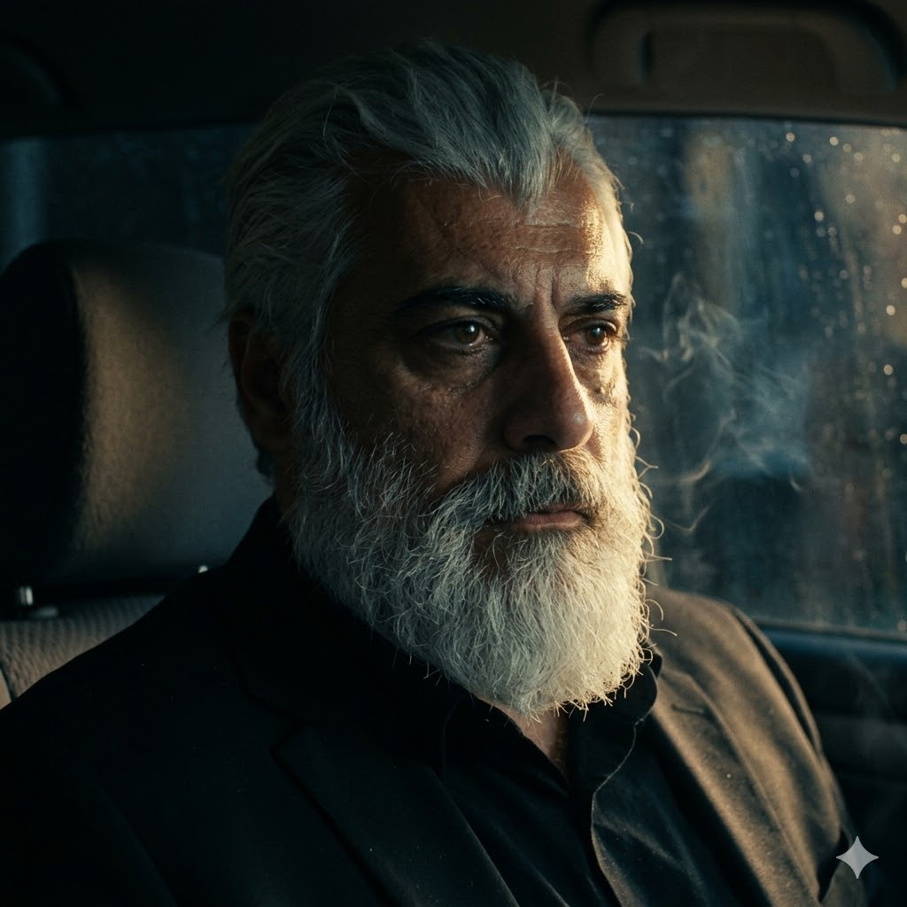

Қаҳрамон Исми (Бу ерга исмни ёзасиз)
Ёши, касби ёки жабрланувчига алоқадорлиги
Қаҳрамон ҳақида тавсиф
Бу ерга қаҳрамоннинг ички кечинмалари, тарихи ва асар сюжетидаги роли ҳақидаги матнларни киритасиз. Матн ҳажмига қараб бу жой ўзи мослашиб кенгаяверади.
Қасос мотиви
«12 Инсон қасоси» Сўз боши Азиз ўқувчи! Ушбу ҳикояни ўқишдан олдин, камина — асар муаллифи Зоҳиджон Зокиров бир нарсани тушунишингизни ва тўғри қабул қилишингизни истардим: 1. Мен профессионал ёзувчи ёки драматург эмасман, шунчаки бир ҳаваскорман, холос. Раҳматли отам Носиржон Зокиров Намангандаги Алишер Навоий номидаги вилоят ўзбек мусиқали драма ва комедия театрида актёр ва хонанда бўлиб ишлаганлар. Қонда озгина санъатга бўлган иштиёқ борлиги сабабли, ўзимни синаш мақсадида шунга ўхшаш ҳикоя ва сюжетларни ёзиб турибман. 2. Ушбу психологик триллер ва драмада асосий салбий қаҳрамоннинг ички кечинмалари ҳамда унинг жамиятга нисбатан аламзадалик, норозилик кайфияти кўрсатиб берилган. Болаликдаги руҳий синиш ва оғир жароҳат (травма) оқибатида у кейинчалик шундай жирканч ишларга қўл уради. Унинг машъум қилмишлари туфайли 12 та оиланинг бегуноҳ фарзандлари қурбон бўлади.
Бош қаҳрамон (Салбий образ)
- Адам Стокс (Британиядан қочиб келган қотил): Ирландияга келгач, ўз исм-шарифини Майкл О’Брайен деб ўзгартирган. Унинг ҳақиқий отасининг исми Брайен бўлиб, жуда золим одам эди. Адам ундан нафратлангани учун ҳам фамилиясини «О’Брайен» (Брайеннинг ўғли) деб танлайди. У Ирландияга сохта паспорт билан қочиб ўтиб, фуқаролик олади. Кейинчалик бу сохта ҳужжатларни турли айланма ва қонунбузар йўллар билан ҳақиқийсига айлантириб, Дублинда яшаб келади.
- Элизабет О’Хара — 14 ёшли Сильвия О’Харанинг онаси. Ресторан раҳбари.
- Линда О’Орайели — 13 ёшли Элиз О’Райелиннинг онаси. Мактаб директори.
- Эшлин О’Салливан — 14 ёшли Ифа О’Салливаннинг онаси. Қандолат фабрикаси назоратчиси.
- Орла Маккарти — 14 ёшли София Маккартининг онаси. Машҳур «Riverdance» гуруҳининг ирланд рақслари устаси.
- Шон О’Райан — 15 ёшли Лилия О’Райаннинг отаси. Ҳарбий шифокор.
- Патрик Мёрфи — 15 ёшли Элизабет Мёрфининг отаси. Ўқитувчи.
- Шон Диллон — 15 ёшли Амелия Диллоннинг отаси. Қурувчи.
- Боб Ривер — 15 ёшли Арлена Ривернинг отаси. Корк шаҳридаги «International Cork Hotel» меҳмонхонаси раҳбари.
- Эшли Диконс — Элизабет О’Харанинг ресторанида официант бўлиб ишлаган, 14 ёшли Финнур Диконснинг опаси.
- Габби Нилсон — 15 ёшли Финн Нилсоннинг опаси.
- Эрлин Райан — 15 ёшли Киллей Райаннинг онаси. Заргар.
- Абигейл Макмаҳон — 15 ёшли Агна Макмаҳоннинг онаси. Уй бекаси.
12 нафар жабрланувчи (Қасоскорлар)
«12 Инсон қасоси» (Сюжет қисқача баёни)
Асосий воқеалар Ирландия пойтахти Дублиндаги ҳашамдор меҳмонхоналарнинг бирида бошланади. Юқори мартабали амалдор қиёфасидаги Майкл О’Брайен аслида жирканч мараз, педофил кимсадир. У ўзининг барча қинғир ва жиноий ишларини катта пул, пора ва сиёсий манфаатлар эвазига ёптириб келади. У асли ирландиялик эмас, балки Буюк Британиялик жиноятчи қочқин фуқароси бўлган. Ўз вақтида ўз ота-онасини ваҳшийларча ўлдириб, исм-шарифини ўзгартирган ҳолда Ирландияга қочиб ўтган. Гарчи олий маълумотли иқтисодчи бўлса-да, унинг бу машъум ва жирканч иллатлари илдизи болалик йилларига бориб тақалади. Аслида бу амалдор — бутун дунёдан норози, қалби кек ва адоватга тўла аламзада шахс. Болаликда олган оғир руҳий жароҳатлари уни мана шундай деградацияга ва маҳлуқликка олиб келган. Бироқ, якуний қотиллик ва қасос воқеаси поездда содир бўлади. Ўша жабрланган 12 нафар бегуноҳ боланинг ота-оналари, ака-опалари ва яқинлари бирлашиб, мана шу разил амалдорни ҳамда унга хизмат қилган, жиноятларини яширишда ёрдам берган шерикларини поезд ичида тутиб, шафқатсизларча ўлдиришади ва ўз қасосларини олишади.
Дублиндаги Ниқоб
1-ҚИСМ: ДУБЛИНДАГИ НИҚОБ
Муқаддима:
Ўтмишнинг совуқ излари ёхуд 1 жабрланган шахс.
Дублиннинг тинимсиз ёғадиган совуқ ёмғири шаҳар устига гўёки қора ниқоб тортгандек эди. Осмон худди қандайдир мудҳиш сирни яшираётгандек маҳзун ва ваҳимали тус олган.
Детектив Райн узун пальтосининг ёқасини кўтариб, ёмғир томчилари остида сигарет тутатаркан, кўзларини темир йўл вокзали томонга қаратди. У инсон руҳиятининг энг қоронғу кўчаларини кўра оладиган детектив эди, лекин бугун шаҳар аро кезиб юрган "Умидсизлик поезди" олиб келаётган қасос шабадасини ҳали у ҳам тўлиқ ҳис қилмаганди... Ҳақиқат эса мана шу совуқ куз тонгидан, О’Хара оиласининг шинамгина ҳовлисидан бошланганди.
Элизабет О’Хара ҳар доимгидек уйида эрта тонгдан ҳовлисига чиқди. Аммо бугун Дублин ҳавосида гуллар ифори эмас, аллақандай совуқ, ваҳимали бир ҳаво изғиб юрарди. Элизабет тўрт фарзандининг тақдири ушбу кундан бошлаб бутунлай ўзгариб кетишини хаёлига ҳам келтирмаганди. Тўнғичи Дени 25 ёшда, бақувват ва оғир-босиқ; Брюс 22 ёшда, ҳаётга тик қарайдиган йигит; Каллан 19 ёшда ва оиланинг энг кенжаси, эркаси — 14 ёшли Сильвия. Сильвия оддий қизча эмасди. Унинг нигоҳларида тенгдошлариникига ўхшамайдиган аллақандай теранлик бор эди. Оиланинг яқин дўсти, мусулмон Али Акбар совға қилган фил суягидан ишланган тасбеҳ қизчанинг қўлидан ҳеч тушмасди. Сильвия тасбеҳнинг совуқ доналарини бармоқлари билан битта-битта сураркан, ундаги сирли жозиба ўзини нимаси биландир жалб қилишини ҳис этарди. Бу тасбеҳ гўёки келажакдаги кўргуликлардан ҳимоя қилувчи бир қалқондек эди. Гоҳида Корк шаҳридан холаси Кетрин О’Хара меҳмонга келганида, уйда байрам бошланарди. Аммо бугунги кун бошқача келди. Уй яқинидаги ҳашаматли меҳмонхона томондан эсган совуқ шамол Сильвиянинг сочларини тўзғитди. — Ойи, мен ҳозир чиқиб келаман, дўкондан ёғ олиб чиқишим керак, — деди Сильвия тасбеҳини маҳкам сиққанча.
Сильвия дўкондан ёғ олиб чиқди. Шу пайт меҳмонхона олдида қора рангли ҳашаматли машина тўхтади. Машина ичидан башанг кийинган одамлар чиқиб, Сильвияни қандайдир ҳужжатларни баҳона қилиб ичкарига олиб кириб кетди. Қизчанинг қўлидан ўша сирли тасбеҳ ерга, тунги Дублин ёмғири остига тушиб қолди... Элизабет қизи кечикканидан хавотир олиб, кўчага югуриб чиқади. У дўкон ёнидан фақатгина қизининг ўша фил суягидан ишланган тасбеҳини топиб олади. У бақириб йиғлайди, полицияга боради. Аммо полиция бошлиғи (Майклнинг одами): "Қизингиз ўз хоҳиши билан уйдан қочиб кетган, далил йўқ" деб эшикни ёпиб қўяди. Сильвия ўша куни уйига қайтмади. Орадан уч кун ўтиб, Дублиннинг қоқ марказидан оқиб ўтувчи совуқ Лиффи (Liffey) дарёси қирғоғидан, тунги туман қўйнида маҳзун бир мурда топилди. Бу шаҳарда охирги йилларда содир бўлаётган, полиция архивида эса "бахтсиз ҳодиса" деб ёпиб юборилаётган ўхшаш фожиаларнинг биринчиси эди... Детектив Райн дарё қирғоғида туриб, сариқ лента билан ўралган жойга тикиларкан, тишларини маҳкам қисди. Унинг рўпарасида 15 ёшли вояга етмаган, ҳаёти эрта хазон бўлган гўдакнинг совуқ жасади ётарди. Райн кўпни кўрган, инсон зотининг ҳар қандай разиллигига гувоҳ бўлган тажрибали терговчи эди, аммо бу сафар унинг ҳам юраги сесканиб кетди. Тергов хулосалари, тиббий экспертиза ҳужжатлари Райннинг қўлига келиб тушганида, у даҳшатли ҳақиқатни англаб етди: бу шаҳарда ўзининг юқори мартабаси, пули ва чексиз ваколатлари орқали қонунни сотиб олган, тунлари эса нафс ва фаҳш ботқоғига ботадиган бир маҳлуқ кезиб юрибди. Бу кимса — шаҳарнинг энг кўзга кўринган амалдори Майкл О’Брайендан бошқаси эмасди! Майкл О’Брайен ўз мансаби ва сохта ниқоби ортига яшириниб, ҳимоясиз, бегуноҳ ўсмирларни ўзининг жирканч нафси қурбонига айлантирар, кейин эса изларни йўқотиш учун уларни шафқатсизларча ўлдириб, совуқ дарё сувларига оқизиб юборарди. Дублин полициясининг юқори раҳбарияти эса Майклнинг пуллари эвазига бу ишларни сохталик билан "сувга чўкиш" ёки "номаълум қотиллик" сифатида архивга кўмиб ташларди. Қонун ожиз эди, адолат эса аллақачон ўлганди. ***
...— Қизимни ўзи уйда ёғ камайиб қолганлигини пайқаб ўзи чиқиб кетганди. Мен унга кеч қолиб кетма, ҳадемай холанг келади Коркдан дегандим. Аммо у қайтмади. — Элизабетнинг овози титраб кетди, кўзларидан оққан ёш ёноқларини ювди. — Детектив, менга полиция маҳкамасида қизинг ўз хоҳиши билан қочиб кетган, дейишди. Бу ёлғон! Менинг Сильвиям ундай қиз эмасди. Улар ниманидир яширишяпти, илтимос, ҳақиқатни айтинг! Жон Райн оғир хўрсиниб, стол устидаги иссиқ чой финжонини Элизабетга яқинроқ сурди. Кейин пальтосининг чўнтагига қўл солиб, Лиффи дарёси қирғоғидан топган ўша сирли буюмни чиқарди ва стол устига қўйди. Бу — фил суягидан ишланган, совуқ тунда ёлғизгина ялтираб турган ўша тасбеҳ эди.
Элизабет тасбеҳни кўриши билан юраги орқасига тортиб кетди. Кўзлари катта-катта очилиб, қўллари титраганча уни бағрига босди: — Бу... бу Сильвиянинг тасбеҳи! Али Акбар совға қилган ўша тасбеҳ! Сиз уни қаердан топдингиз, детектив? Қизим қаерда?! Райн ўрнидан туриб, дераза ёнига борди. Ташқарида Дублин ёмғири тинмай дераза ойналарини чертар, худди табиат ҳам бу мудҳиш қотилликка гувоҳлик бераётгандек эди. У сигарет тутатди, тутун хона бўйлаб тарқаларкан, Жон Райн ҳаётида биринчи марта полиция қонунларини бузиб, бир онага энг даҳшатли ҳақиқатни айтишга қарор қилди. — Элизабет, сиздан ҳақиқатни яширмайман, — деди Райн овозини пасайтириб, совуққонлик билан. — Қизингизни полиция қидираётгани йўқ. Чунки шаҳар тепасида ўтирган катта элита бу иш ёпилишини буюрган. Сильвия ўз хоҳиши билан қочиб кетмаган. Уни ўша куни меҳмонхона ёнида тутиб кетишган... Уни шаҳарнинг энг даҳшатли маҳлуқи — Майкл О’Брайен ўз нафсининг қурбони қилди ва изларни йўқотиш учун дарёга оқизди. Мен бу тасбеҳни Сильвиянинг совуқ бармоқлари орасидан топиб олдим... Элизабет бу гапларни эшитиб, худди устидан совуқ сув қуйилгандек қотиб қолди. Хонани бир сонияга ваҳимали сукунат эгаллади. Онанинг кўзидаги маюслик аста-секин даҳшатли бир нафрат ва ғазабга айлана бошлади.
***...Элизабет узоқ ўйлади. Ҳовлидаги гулларга сув қуя туриб, хаёлидан Детектив Райннинг совуқ ва қатъиятли нигоҳлари, берган мардонавор қасами ҳеч кетмади. У қонундан умидини узган бўлса-да, бу детективга бутун борлиғи билан ишонди. У уйга кирди. Меҳмонхонада оиланинг катталари — 25 ёшли Дени, 22 ёшли Брюс ва 19 ёшли Каллан синглиси Сильвиянинг суратига қараб, маҳзун ўтиришарди. Уларнинг юзида алам ва чорасизлик бор эди. Элизабет эшикни маҳкам ёпди, пардаларни тортди. Унинг жиддий ва ўзгариб қолган қиёфасини кўриб, ўғиллари унга ҳайрон тикилишди. — Болаларим, бу гапларни фақат сизларга айтаман, — Элизабетнинг овози паст, лекин жуда вазмин чиқди. — Кўчада, одамлар орасида бу ҳақда ҳеч кимга оғиз очмайсизлар. Ҳатто холангиз Кетрингга ҳам. Бу орамиздаги сир бўлиб қолади. Мен кеча Детектив Жон Райн билан учрашдим. У қизимиз Сильвияни ким ўлдирганини билади... Ўғиллар бирдан сергак тортишди. Катта ўғли Дени ўрнидан туриб кетди: — Ойи! Ким экан ўша маҳлуқ? Полиция нега уни ушламаяпти?!
— Тинчлан, Дени, — деди Элизабет ўғлининг қўлидан тутиб. — Уни полиция ушлай олмайди. Мунофиқ Майкл О’Брайен... Тез-тез телевизорда чиқиб, қонун ҳақида гапирадиган ўша амалдор. У сотиб олган полиция элитаси ҳужжатларни йўқ қиляпти. Детектив Райн биз тарафда. У О’Брайенга қарши қонунсиз бўлса-да, ҳақиқий жазо беришга қасам ичди. Мен у билан бирлашдим. Энди сизлар ҳам мен билан биргасизлар. Номусимиз ва Сильвиянинг руҳи учун бу сирни ўлгунимизча сақлаймиз ва вақти келганда ҳаракат қиламиз! Уч ака бир-бирига қаради. Уларнинг томирида ёш ва шиддатли қон оқарди. Синглисининг қотили кимлигини билиш уларнинг ичидаги нафрат оловини уйғотди. Улар онасининг қўлини маҳкам қисиб, бу оловли йўлда бирга бўлишга қасам ичишди. О’Харалар оиласи энди шунчаки жабрланувчи эмас, занжирнинг илк яширин қуролига айланганди. Аммо улар шаҳардаги маҳлуқнинг нафси нақадар яқин атрофда изғиб юрганини ҳали тўлиқ англаб етмагандилар. Орадан атиги икки кун ўтди. Даҳшатли қисмат О’Харалар хонадонининг ёнгинасига, уларнинг энг яқин қўшнилари эшигига ваҳима билан кириб келди. Бу сафар Майкл О’Брайеннинг қонли қўллари бир йўла иккита бегуноҳ гўдакни ҳаётдан юлиб кетди. Биринчиси — О’Хараларнинг ўнг томондаги қўшниси, маҳаллий мактаб директори, жиддий ва обрўли аёл Линда О’Рейли эди. Унинг 13 ёшли қизи Элиз О’Рейли мактабдан қайтаётиб, худди Сильвия каби жумбоқли тарзда ғойиб бўлди. Иккинчиси — чап томондаги қўшни, шаҳардаги қандолат фабрикасида оддий ишчи бўлиб меҳнат қиладиган, ҳалол аёл Эшлин О’Салливаннинг оиласи эди. Унинг 14 ёшли ширингина қизи Ифа О’Салливан ҳам худди шу куни уйига қайтмади. Икки кун ичида биргина маҳалладан учта ёш қизнинг йўқолиши Дублинни ларзага солди. Кўчаларда хавотир, қўрқув ва ваҳима ҳукмрон эди. Болалар уйдан чиқишга қўрқиб қолишганди. Линда О’Рейли ва Эшлин О’Салливан худди икки кун олдин Элизабет аҳволга тушгандек, телбаларча йиғлаб, Дублин полиция маҳкамаси эшиги тагида туришарди. Аммо полиция бошлиқлари уларга ҳам совуққина қилиб: "Болаларингиз шунчаки уйдан қочиб кетган, далиллар йўқ" деган сохта баҳонани рўкач қилишди. Маҳкама биносининг иккинчи қаватида, ўз хонаси деразасидан алам билан пастга қараб турган Детектив Жон Райн эса тишларини нафратдан шундай қисиб турардики, қўлидаги қалам синиб кетди. У Линда ва Эшлиннинг кўз ёшларида ўз синглисининг, ўз яқинларининг келажакдаги фожиасини кўргандек бўлди. Занжир кенгайиб борарди: Элизабетдан кейин рўйхатга яна иккита қон йиғлаётган она — мактаб директори Линда ва қандолатчи Эшлин қўшилганди... **
Детектив Райн секин асталик билан ташқарига чиқиб, уйи томон йўл олди. Райн эшикни очдию, бир шинжон чойни ичдию ғазаб ила қўлидаги идишни отиб – Мараз, исқирт ифлос – дея бақирдида қўлига тушган барча идишларни хар томнга қараб ота бошлади. Нохақсизлик адолатсизликни кўтараолмаган Райн ғазаб отига минган эди. Ерга чўкдию бўкириб йиғлай бошлади – Уларда нима гунох эди? Ахир булар гўдакку? Шошма сен маразни мен шундай макорона йўқ қилайки... Мараз –деда қўлидаги виски идишини деворга қарата отди. Вискининг идиши чилпарчин бўлиб кетти. Сўнгра бирдан эшик таққилади. Дарғазаб Райн эшикни ғазаб билан очди. Эшик ортида 3 та жабрланганлар турарди Элизабет , Линда Орайели 13 ёшли Элиз Орайелининг Онаси ва Эшлин О.Саливан Ифа О.Саливаннинг Онаси эди. – Кирсак майлими? Биз сизнинг хузурингизга умид билан келдик. – дейишди уччалалари кўзларидаги ёш билан. - Ххаа Албатта киринглар- ўзини босиб олган Райн. Райн 3чала мехмонга чой узатти. - Сиздан ёрдам сўраб келдик жаноб Райн. Сиз Элизабет билан гаплашибсиз, бизга у айтди биз хам бу масалада ўша разил қотилни жазосини бериш мақсадида бирлашамиз. Сизни кўрсатмаларингиз билан иш тутамиз айтинг нима қилайлик? - Менга қаранглар, биз хозир қалтис вазиятдамиз энди мени уйимга келманглар. Хар қалай эскиларда гапп бор “Деворниям қулоғи бор” дейишадию? Сизлар барча қиладиган ишларингизни қилавернглар мен ўзим сизларни чақираман аммо мени уйимдамас.- дедида уларни дераза томонга таклиф қилди ва ишора қилиб деразанинг пардасини сал очдида пастдаги қора Волсваген машинасига қаратди. ...Улар пастдаги, тунги ёмғир остида чироқлари ўчирилган ҳолда писиб турган қора Volkswagen машинасини кўришдию, юраклари музлаб, бошларини қимирлатганча ортга қайтишди. Хавф улар ўйлагандан кўра анча яқин ва даҳшатли эди. Майкл О’Брайеннинг қулоқлари ва кўзлари аллақачон Жон Райннинг уйи атрофида айланиб юрарди. Уч она оёқ учида, секингина зиналардан пастга тушиб, совуқ тун қўйнига сингиб кетишди.
Жон Райн дераза пардасини қайта ёпиб, чироқни ўчирди. Хона яна қоронғуликка ғарқ бўлди. Пол устида чилпарчин бўлган виски идишининг парчалари ва тўкилган чой томон қараркан, Райннинг юзида совуқ ва маккорона бир табассум пайдо бўлди. У маньяк О’Брайенни қандай тузоққа туширишни энди аниқ биларди. "Демак, мени кузатяпсанми, мараз? — деб пичирлади Райн қоронғуликка қараб. — Сўнгги юришни мен бошлайман. Сен эса сезмай қоласан..." Эртаси куни эрта тонгда Райн полиция маҳкамасига оддий кунлардагидек ҳеч нарса бўлмагандай кириб келди. У шефларининг хонасига кириб, Линда О’Рейли ва Эшлин О’Салливаннинг қизлари йўқолгани ҳақидаги янги аризаларни стол устига қўйди. Полиция бошлиғи совуққонлик билан аризаларни четга суриб: — Жаноб Райн, бу қизлар ҳам ўша О’Харанинг қизи каби уйдан қочиб кетган. Бу оддий ўсмирларнинг исёни, вақтимизни кетказмайлик, — деди. Райн индамади. Фақатгина кўзларидаги нафрат оловини яшириш учун бошини эгди. У тизимнинг бутунлай чириганига яна бир бор амин бўлди. У ўз хонасига қайтиб, стол тагига яширинча ўрнатилган кичик аудио-ёзиб олувчи мосламаларни текширди, чўнтагига махфий блокнотини солди. У энди Дублиннинг қоронғу ва ҳеч ким билмайдиган чекка бир жойини — жабрланган оилалар билан учрашадиган янги "Штаб-квартира"ни тайёрлаши керак эди. Бу пайтда О’Харалар хонадонида Элизабет қўшнилари Линда ва Эшлин билан ўз уйининг ертўласида яширинча учрашди. Линда О’Рейли — мактаб директори сифатида доим қонунга ишонган аёл эди, аммо ҳозир унинг кўзларида қонунга нисбатан фақат ғазаб бор эди. Эшлин эса қандолат фабрикасидаги оғир меҳнатидан сўнг ягона умиди бўлган қизи Ифанинг суратини бағрига босиб ўтирарди. — Райн тўғри айтди, — деди Элизабет уларнинг қўлларини маҳкам сиқиб. — О’Брайеннинг одамлари унинг уйини кузатишяпти. Биз жуда эҳтиёт бўлишимиз керак. Аммо орқага йўл йўқ. Райн бизни чақиришини кутамиз. Қизларимизнинг қони ерда қолмайди.
Орадан икки кун ўтди. Шаҳардаги ваҳима сукунат билан алмашгандек эди. Бироқ, бу бўрон олдидаги тинчлик эди. Майкл О’Брайен ўзини бутунлай дахлсиз сезиб, Дублин марказидаги ҳашаматли ресторанида навбатдаги сиёсий нутқини сўзлаётган, телевизорлар эса уни "шаҳар қаҳрамони" сифатида кўрсатаётган эди. Айнан ўша куни кечқурун, Жон Райн ишдан чиқиб, кузатувдаги қора Volkswagen машинасини чалғитиш учун Дублиннинг эски маҳаллалари ичига кириб кетди. Машинасини чеккада қолдириб, пиёда тунги туман қўйнида бир эски, ташландиқ темир йўл омборхонаси томон юрди. Бу омборхона айнан Майкл О’Брайеннинг хусусий поезди йўлга чиқадиган темир йўл рельсларининг ёнгинасида жойлашган эди. Райн омборхонанинг занглаган темир эшигини очди. Ичкари совуқ ва қоронғу эди. У чўнтагидан чироғини ёқиб, стол устига Дублин вокзалининг ва ўша машҳум 12-вагоннинг батафсил харитасини ёйди. Кейин эса чўнтагидан телефонини чиқариб, махфий рақамдан Элизабетга қисқагина хабар юборди: "Манзил: Эски темир йўл омбори. Бугун ярим тунда. Линда ва Эшлинни ҳам олиб кел. Биринчи режани бошлаймиз." Хабарни юбориб бўлгач, Райн пальтосининг ички чўнтагидан Лиффи дарёсидан топган фил суягидан ишланган ўша сирли тасбеҳни чиқарди ва стол устидаги хаританинг қоқ марказига, Майкл О’Брайеннинг сурати устига қўйди... ...Омборхонанинг совуқ ва нам ҳавосида Райннинг қатьиятли нигоҳлари йиғилганларга бир-бир қараб чиқди. Хонада Элизабет, Линда, Эшлин ва уларнинг дарғазаб, кўзлари аламдан қонга тўлган турмуш ўртоқлари — оталар турарди. Улар ўз гўдакларининг қасоси учун ҳар қандай хавфга, ҳатто ўлимга ҳам тайёр эдилар. — Жуда яхши, — деди Райн харита устига янада яқинроқ эгилиб. — Демак, бутун бошли тизимни йўқ қилиш учун бизга аниқлик ва совуққонлик керак. О’Брайеннинг поезди оддий транспорт эмас. Бу у ўзи тиклаган ифлос, жирканч авторитар элитанинг кўчма қалъасидир. Биз мана шу қалъани ичидан туриб портлатамиз. Райн чўнтагидан кичик, совуқ шиша идишларни чиқарди ва стол устига қўйди. Шишалар ичидаги кукун чироқ нурида ваҳимали ялтирарди. — Бу — маргумуш (мышьяк), — деди Райн овозини пасайтириб. — Ҳеч қандай ҳид ва таъмга эга эмас. Поезд йўлга чиққандан сўнг, О’Брайенга содиқ хизмат қиладиган, қизларимизнинг аризаларини куйдирган ўша прокурорлар, федераллар ва полиция бошлиқлари қолган 11 та вагонда байрам қилишади, спиртли ичимликлар ичиб, маишатга берилишади. Жаноблар, сизлар ўша вагонларга хизматчи ёки кузатувчи ниқоби остида кирасизлар. Ва уларнинг чойларига, қимматбаҳо вискиларига мана шу кукунни қўшасизлар. Улар нима содир бўлганини англамай, қонунсизлик жазосини мана шу вагонларда топишади. Улар ўша заҳардан тил тартмай ўлишади. Оталар Райннинг сўзларини эшитаркан, қўлларини маҳкам мушт қилиб тугишди. Уларнинг юзида қўрқувдан асар ҳам йўқ эди, фақатгина тезроқ ҳаракатни бошлаш истаги ёнарди. — Аммо асосий маҳлуқ — Майкл О’Брайен биринчи вагонда, ўзининг махсус ҳашаматли купесида ёлғиз қолади, — давом этди Райн кўзларини Майклнинг суратига қадаб. — Унга заҳар берилмайди. Унинг ўлими осон бўлмайди. У қолган 11 та вагондаги одамлари аллақачон ўлиб бўлганини, поезд эса ўзининг сўнгги бекатига қараб кетаётганини билганида, унинг қаршисида мана шу қон йиғлаган қалблар пайдо бўлади. Унинг сўнгги сониялари даҳшат ичида ўтади. Сизлар унга ўз ҳукмингизни ўқийсизлар. Элизабет эрларининг елкасидан тутиб, Райнга қаради: — Жаноб Райн, биз тайёрмиз. Бу маразлар бизнинг ҳаётимизни жаҳаннамга айлантирди. Энди уларнинг ўзлари жаҳаннамга йўл олишади. Бу операция қачон бошланади? Жон Райн стол марказидаги фил суягидан ишланган тасбеҳни қўлига олди. Унинг совуқ доналарини бармоқлари билан сураркан, дераза ортидаги тунги Дублин вокзали томон қаради. — О’Брайен келаси ҳафта жума куни ярим тунда ўзининг машҳум поездини йўлга қўяди. Унгача биз қолган тўққизта оилани ҳам топамиз. Уларга ҳам худди шундай тушунтирамиз. Эркаклар поезд ичида жангга киришади, хонимлар эса ташқарида бизга кўмакчи бўлишади. Энди уйингизга боринг ва кутинг. Фожиа занжирини адолат занжирига айлантирадиган кун яқинлашмоқда... Жабрланувчилар Райннинг режасини бошларини силкиб тасдиқлашди ва совуқ тун тумани қўйнига сингиб, яширинча тарқалишди. Омборхонада ёлғиз қолган Жон Райн эса стол устидаги Майкл О’Брайеннинг суратини пичоқ билан қоқ марказидан санчиб қўйди. Шафқатсиз ва адолатли қасоснинг биринчи йирик босқичи ишга тушган эди... Даҳшатли ва нафас чиқармай ўқиладиган даражада шиддатли бўлди! Райннинг заҳарлаш тактикаси ва эркакларни операцияга жалб қилиши сюжетни жуда бақувват қилди. Худди катта сиёсий триллер филмларидек атмосфера пайдо бўлди. ***...Жон Райн тунги учрашувдан сўнг ўз уйи томон яқинлашаркан, узоқдан эшиги олдида турган сояни пайқади. Кўча чироғининг маҳзун нурида узун плаш кийган, ёши 60 лар атрофидаги бир қария кўринди. Райн ўзини ва хавфсизликни ўйлаб, пальтоси остидаги тўппончасининг темир дастасига қўл ура бошлади. Бармоқлари тепкига яқинлашди, кўзлари қисилди. Қария Райннинг ҳаракатини сезди ва иккала қўлини аста кўтариб, хотиржам оҳангда гапирди: — Жаноб детектив, ҳеч хавотирланманг. Мен қуролланган эмасман. Менинг исмим Дональт Стокс, Британиядан келдим. Сиз билан Майкл О’Брайен ҳақида гаплашишим керак эди, илтимос, суҳбатлашсак. "О’Брайен?" — бу номни эшитиши билан Райннинг танаси ток ургандек титраб кетди. У атрофга аланглаб, анави қора Volkswagen машинаси яқин атрофда йўқлигига ишонч ҳосил қилгач, қўлини аста-секин тўппончадан олди. Қария билан совуққина қўл ушлашиб саломлашди ва уйига бошлаб кирди. Хонага киришгач, Райн чироқни ёқди. Пол устида ҳали ҳам кечаги синган идишларнинг парчалари ётарди. Райн меҳмонга креслони кўрсатди ва ўзи унинг рўпарасига ўтирди. Қария плашини ечиб, оғир хўрсинди. Унинг юзидаги ажинлар чуқур, кўзларида эса йиллар давомида тўпланган улкан бир виждон азоби ва маҳзунлик бор эди. — Хўш, жаноб Стокс, сизни Британиядан Дублинга, айнан менинг уйимга нима бошлаб келди? Ва О’Брайен билан сизни нима боғлаб туради? — сўради Райн кўзларини қарияга қадаб. Қария Жон Райннинг кўзларига тик боқди ва совуқ овоз билан шундай деди: — Жаноб Райн... Мен ўша мараз Майкл О’Брайеннинг туққан тоғаси бўламан. Райн бу гапни эшитиб, қўлидаги сигарет қутисини маҳкам сиқди. Ичидаги нафрат олови яна аланга олди, лекин у ўзини тутиб, совуққонликни сақлашга ҳаракат қилди: — Тоғаси? Демак, жиянингизни ҳимоя қилиш ёки уни менинг қўлимдан қутқариш учун келдингизми? Жуда кеч қолдингиз, жаноб Стокс. Унинг қилган ишлари учун бу шаҳарда унга жой қолмади. Дональт Стокс алам билан бош чайқади, кўзларидан ёш сизиб чиқди: — Йўқ, детектив! Мен уни ҳимоя қилгани эмас, уни жаҳаннамга кузатгани келдим! У одам эмас, у менинг синглимдан туғилган бир иблис! Унинг болалигидаги даҳшатли сирларини, қандай қилиб бу жирканчликка қадам қўйганини фақат мен биламан. Британияда ҳам у кўп қон тўккан, лекин пуллари билан ҳамма нарсани ёпган. Мен Дублин полициясида фақатгина сиз сотилмаганингизни, фақат сиз ўша жабрланган оила билан бирлашганингизни эшитдим ва сизга ёрдам бериш учун келдим. Уни тўхтатиш керак, детектив! Агар у ўша поездга чиқса, у яна янги қурбонларни олиб кетади! Жон Райн қариянинг сўзларидан ундаги нафрат ва дард чин эканлигини ҳис қилди. Иблиснинг ўз қон-қариндоши унга қарши гувоҳлик беришга келган эди. Райн креслосига суяниб, қарияга яқинроқ келди: — Демак, О’Брайеннинг тоғаси биз тарафда... Хўш, Дональт, менга айтинг-чи, у ҳақда биз билмайдиган яна қандай сирлар бор? Ўша поездда у ўзини қандай ҳимоя қилмоқчи? ***
Тўфон ниқоби
...Жон Райн Дональт Стокснинг гапларини эшитиб, ўтирган креслосидан олдинга қараб энгашди. Унинг кўзларида ҳайрат ва янги бир хавфли олов ёнди. Қариянинг режаси Райннинг маргумушли схемасини мукаммаллик даражасига олиб чиқарди. — Демак, дейсиз... — Райн овозини жуда пасайтириб, стол устидаги синган шиша бўлакларига тикилди. — Текширув аппаратлари... О’Брайен ўзини жуда қаттиқ қўриқлатар экан-да? — Ҳа, детектив, — Дональт Стокс бошини силкиб, Райнга яқинроқ келди. Унинг овозида Британия кўчаларининг совуқ шиддати сезилиб турарди. — У ҳар бир вагонга чиққан шахсни соч толасигача текширтиради. Агар жабрланган оталар кузатувчи ниқобида яқинлашса, О’Брайеннинг соддиқ итлари уларни таниб қолишади ва режамиз ҳали бошланмай барбод бўлади. Жияним маҳлуқ бўлса ҳам, жуда эҳтиёткор. Лекин унинг битта заиф томони бор — нафс ва кеккайиш! У ўзини қирол деб ҳисоблайди. Қария чуқур нафас олиб, кўзларини қисди: — Унга катта бир тадбир, баҳона керак. Масалан, унинг яқинлашиб келаётган туғилган куни ёки Дублин элитаси учун махсус ёпиқ кеча! Мен унга ўзимнинг шахсий поездимни таклиф қиламан. У мени тоғаси сифатида шубҳасиз қабул қилади. Вагонларда катта айш-ишрат уюштирамиз. Дабдаба, қимматбаҳо ичимликлар... Ва энг асосийси — аёллар! Мен у ерга энг гўзал, лекин ичи нафратдан ёнаётган аёлларни олиб келаман, Райн. Райн сигаретининг кулини кулодонга тушириб, қариянинг кўзларига қаради: — Бу аёллар кимлар, Дональт? — Улар — Британиянинг ноқонуний ишратхоналарида азобланган, катта мафиянинг жабрдийдалари, Райн! — қариянинг овози титраб кетди. — Ўша мафиозилар орқасида ҳам О’Брайеннинг пулллари ва ҳимояси туради. Бу қизларнинг қалби тилка-пора бўлган, уларнинг ҳам О’Брайенда алами бор! Улар поездга "оввунчоқ" бўлиб киришади, лекин уларнинг плашлари остида, нафс ботқоғига ботган амалдорлар учун ўша сиз айтган маргумушлар ва заҳарлар яширинган бўлади! Саёқат бошланганда, элита маишат билан банд бўлган сонияларда, бу аёллар ўша прокурорлар ва федералларнинг шампан винларига ўлим уруғини сочишади! Текширув соқчилари гўзал аёлларни бунчалик қаттиқ тинтишмайди, улар О’Брайеннинг меҳмонларига тегишга қўрқишади! Жон Райн ўрнидан туриб хона бўйлаб юра бошлади. Унинг миясидаги чигал занжирлар бир-бирига шундай мукаммал боғланаётган эдики, у Дональт Стокснинг елкасига қўлини қўйди. — Бу шунчаки режа эмас, Дональт... Бу ҳақиқий қопқон, — деди Райн тишларини маҳкам қисиб. — Демак, аёллар ичкарида тизим итларини заҳарлаб, йўлдан олиб ташлашади. Биз — фарзандидан айрилган оталар ва мен эса, поезднинг охирги бекатида, О’Брайен қолган 11 та вагондаги ҳамма одамлари ўлганини билиб, даҳшатга тушган сонияда вагон ичига бостириб кирамиз. У қуролсиз, ҳимоясиз ва ёлғиз қолади! — Худди шундай, детектив, — Дональт Стокс ўрнидан турди. — Мен эртаданоқ О’Брайен билан боғланаман ва унга "туғилган кун совғаси" сифатида ушбу поезд кечасини таклиф қиламан. Сиз эса Элизабет ва қолган оилаларни огоҳлантиринг. Бу сафар биз қонунни эмас, иблиснинг ўз қоидаларини чилпарчин қиламиз. Жон Райн қарияни кузатиб қўяркан, ташқарида ёғаётган Дублин ёмғири худди бўлажак қонли тўфондан дарак бераётгандек шиддатли эди. Райн чўнтагидан фил суягидан ишланган ўша тасбеҳни чиқарди. Энди бу тасбеҳ нафақат жабрланган оиланинг, балки ўша Британиядан келадиган аламзада аёлларнинг ҳам озодлик ва қасос рамзига айланиши керак эди. ...Эртаси куни тушдан кейин Дублин осмонини совуқ, қора булутлар қоплади. Телевизор ва радио янгиликларида бошловчининг титраб чиқаётган овози бутун шаҳарни музлатиб қўйди: «Бугун тонгда Дублиннинг чекка ва ташландиқ кўчаларидан бирида даҳшатли қотиллик излари топилди. Олиб борилган тезкор қидирув натижасида, бундан 10 кун олдин шаҳарнинг турли ҳудудларидан сирли равишда йўқолган 9 нафар бегуноҳ ўсмир қизларнинг жасади топилган... Полиция ҳозирча изоҳ бермаяпти...» Телевизор экранида ҳаётдан эрта хазон бўлган гўдакларнинг — София Маккарти, Лилия О’Райан, Элизабет Мёрфи, Амелия Диллон, Арлена Ривер, Финнур Диконс, Финн Нилсон, Киллей Райан ва Агна Макмаҳонларнинг суратлари бирин-кетин чиқа бошлади. Бу хабарни ўз уйида эшитаётган Элизабет О’Харанинг қўлидаги финжон полга тушиб, чил-чил бўлди. Унинг юраги аламдан чиқиб кетай деди. Худди шу сонияларда Дублиннинг 9 та турли бурчагида — «Riverdance» гуруҳининг рақс залида Орла Маккарти, ҳарбий шифохонада Шон О’Райан, мактаб синфхонасида ўқитувчи Патрик Мёрфи, қурилиш майдонида Шон Диллон ва Коркдаги ҳашаматли меҳмонхонасида Боб Ривер телбаларча бақириб, йиғлаб юборишди. Эшли Диконс, Габби Нилсон, заргар Эрлин ва уй бекаси Абигейлнинг хонадонларига қиёмат келди. Қонун яна жим эди. Полиция раҳбарияти эса Майкл О’Брайеннинг буйруғи билан бу ишни ҳам "гуруҳли бахтсиз ҳодиса" ёки "номаълум тўданинг иши" деб архивга кўмиш ҳаракатига тушганди. Детектив Жон Райн маҳкамадаги хонасида телевизорни нафрат билан ўчирди. Унинг кўзларидан олов чиқарди. У энди вақт зиқлигини, маҳлуқнинг нафси чегарадан чиққанини англади. У чўнтагидан телефонини олди ва Дональт Стокс, Элизабет, Линда ҳамда Эшлинга битта қисқа хабар ёзди: «Занжир тўлди. Улар 12 нафар бўлишди. Бугун ярим тунда ўша эски темир йўл омборида ҳаммамиз йиғиламиз. Янги келган 9 та оилани ўзим билан бошлайман. Бугун Дублин тарихидаги энг қоронғу ва энг адолатли кеча бўлади...» Ярим тун соат 00:00. Эски темир йўл омборхонаси ичида маҳзун ва ваҳимали сукунат ҳукмрон эди. Чироқ нурида стол устидаги Дублин вокзали ва 12-вагонли поезднинг харитаси ётарди. Эшик аста очилиб, ичкарига Жон Райн бошчилигида кўзларидан нафрат ва алам ёшлари оқаётган 12 та оиланинг оталари ва оналари кириб келишди.
Ҳарбий шифокор Шон О’Райан муштларини тугиб Райннинг рўпарасига келди: — Детектив...
Қизимни ўша маҳлуқ ўлдирдими? Айтинг, мен армияда юриб, кўп ўлим кўрганман, лекин ўз гўдагимнинг совуқ жасадини кўриш... Бунга қайси қонун жавоб беради?! Райн уларнинг барига қараб, бошини сарак-сарак қилди: — Бу шаҳарда қонун ўлган, жаноблар. Уни Майкл О’Брайен ўлдирган. Лекин биз тирикмиз. Мана бу киши — Дональт Стокс, О’Брайеннинг тоғаси. У биз тарафда. Дональт Стокс олдинга чиқиб, йиғилган 12 та оилага таъзим қилди: — Мен сиздан кечирим сўрайман... Менинг синглимдан туғилган ўша иблис сизларнинг ҳаётингизни барбод қилди. Илтимос, мени эшитинг. Биз унинг поездини қабрга айлантирамиз. Жаноб Боб Ривер, сиз меҳмонхона раҳбари сифатида менга поезддаги байрам хизматини ташкил қилишда ёрдам берасиз. Доктор Шон, сиз маргумушнинг дозасини шундай ҳисоблайсизки, анави сотилган прокурорлар ва федераллар ичимликни ичиши билан овоз чиқармай йиқилишлари керак. Эрлин хоним, сиз ўша заҳарларни узатиш учун махсус идишларни тайёрлайсиз. Жон Райн стол марказидаги фил суягидан ишланган тасбеҳни қўлига олди ва баланд овозда гапирди: — Эркаклар ва аёллар! Иблис ўз тўйини жума куни ярим тунда ўша поездда нишонлайди. Британиядан келадиган аламзада қизлар ичкарида заҳарни тарқатишади. Биз эса 12 та оила, қўлимизда 12 та пичоқ билан 1-вагонда Майкл О’Брайенни кутамиз. Ҳар бир қизнинг қони учун, О’Брайеннинг танасига биттадан адолат санчилади! Орқага йўл йўқ! 12 та оила бир овоздан: "Орқага йўл йўқ!" деб қасам ичишди. Омборхонадаги совуқ ҳаво уларнинг ғазабнок нафасларидан қизиб кетган эди...